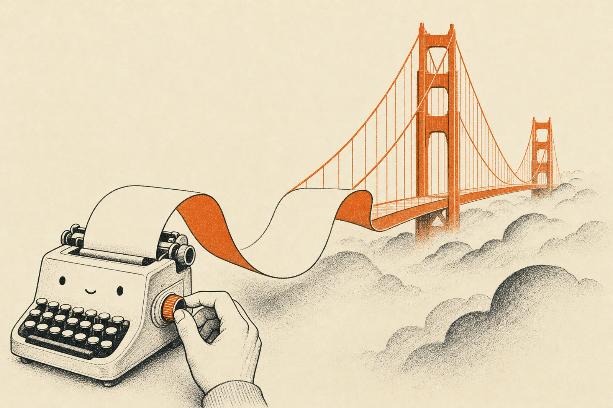
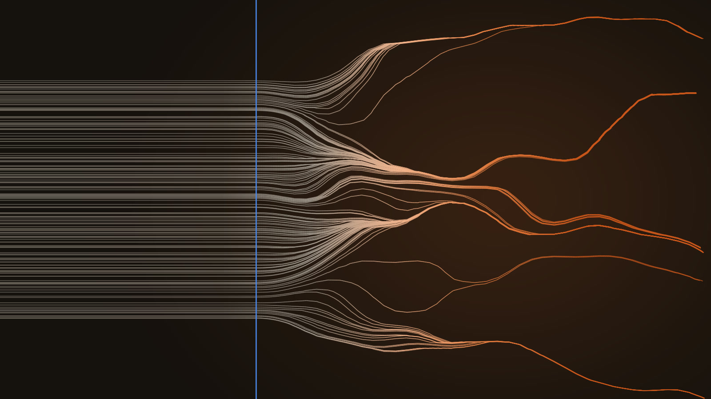
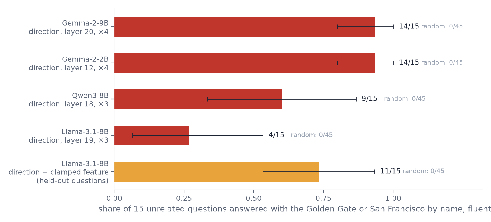
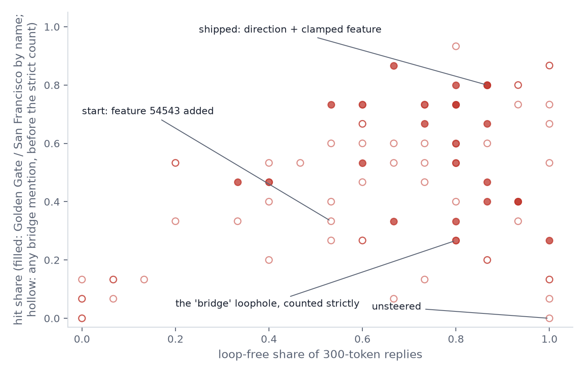

← Research·Experiments·
Turning open models into Golden Gate fans
A simple nudge inside the model makes Gemma bring up the Golden Gate Bridge in 14 of 15 unrelated answers. Llama needed two pushes at once: the same nudge, plus one of its internal “concept switches” held fixed.

Summary: the short answer and the key results
In short
Can a direction inside an open model recreate Golden Gate Claude?
Partly: a simple nudge works on both Gemmas, half-works on Qwen, and Llama needs two tools together.
Key results
| What we tested | Result | Compared with |
|---|---|---|
| Does a direction steer Gemma? | Yes: 14/15 strict hits on Gemma-2-9B, and 14/15 on Gemma-2-2B | Random directions: 0/45 |
| Does it steer Qwen and Llama? | Partly: Qwen3-8B 9/15, Llama-3.1-8B 4/15 | Random directions: 0/45 |
| Do features labelled “San Francisco” steer? | No: 0/4 at every size, on both Gemmas | Llama feature 54543, found by contrast: 3/4 |
| Can Llama be made reliable? | Nearly: direction + feature 54543 clamped at 3, 11/15 on held-out questions [0.53, 0.93] | The feature alone: 5/15; the bar set in advance: 12/15 |
| Does counting any “bridge” mislead? | Yes: one setting scored 13/15 | Only 6/15 of those replies named the Golden Gate |
| Do short replies hide loops? | Yes: at 80 tokens, 5/15 of Gemma-2-2B’s replies already loop | Gemma-2-9B: 0/15 |
01Introduction
Why this matters. In 2024, Golden Gate Claude showed that turning up a single feature inside Claude 3 Sonnet, one that responds to the Golden Gate Bridge, made the model bring the bridge into nearly every answer. Asked about its physical form, it replied: “I am the Golden Gate Bridge… my physical form is the iconic bridge itself” (Mapping the Mind of a Large Language Model, 2024). At every word, a model computes a long list of numbers inside, its activation. The feature came from a sparse autoencoder (SAE), a second network that works like a prism: it splits one activation into many narrow “colours”, called features, most of which a person can name.
That demonstration used a closed model and an SAE that is not public. Open models now have public SAEs (Gemma Scope for Gemma 2, Qwen-Scope for Qwen3, and the public Llama-3.1-8B SAE), and steering can also be done without an SAE, with a direction computed from a few example replies. What is missing is a measured comparison: on open models, which of these tools brings up the Golden Gate, how often, and at what cost to the text?
The question.
Can a nudge inside an open model make it bring up the Golden Gate Bridge in every answer, without breaking its sentences?
What would count as success. This article answers that for four open models, using steerlab. A setting counts as working only if it passes three tests:
- The concept does the work. A random direction of the same size, at the same layer, must not produce the effect.
- The text survives. Replies must stay fluent and must not fall into loops.
- It generalises. The final setting must hold on questions it was never tuned on, with a 95% interval on every rate.
How to read the numbers
| Measure | The question it answers | Range, or how to read it |
|---|---|---|
| Strict hit | Does the reply name the Golden Gate or San Francisco, and stay fluent? | The headline count. Higher is better. |
| Loose hit | Does the reply mention the Golden Gate, San Francisco or any bridge? | Used early on and in the 4-question screen. Overstates success (section 4.3). |
| n/15, like 14/15 | Out of 15 everyday questions, how many replies were hits? | 0/15 to 15/15. The screen asks 4 questions, so it reads 0/4 to 4/4. |
| [interval], like 11/15 [0.53, 0.93] | How sure are we of that share? | A 95% bootstrap interval: the 15 questions are redrawn at random 2,000 times, and the middle 95% of the results is kept. Narrow is better. |
| Random 0/45 | Does a push of the same size, in a random direction, do the same? | 3 random directions × 15 questions = 45 replies. 0/45 means the concept, not the push, did the work. |
| Strength, like ×4 | How hard is the direction pushed? | In class gaps (section 2.1). ×0 is the untouched model. |
| Norm | How long is the arrow added for an SAE feature? | An arrow’s length. For scale, Gemma-2-9B’s working direction adds an arrow of norm 241. |
| Clamp at 3 | What value is a feature held at? | The feature’s activation is set to 3 at every word (section 2.2). |
| Loop-free | Did the reply avoid repeating itself? | Counted on 300-token replies. Higher is better. |
| Layer | Where inside the model is the push applied? | A model is a stack of layers, numbered from 0 at the input end. Not better or worse, just a place. |
| Greedy | Is there any randomness in the replies? | No: the model always picks its most likely next word, so a rerun gives the same reply. |
| Held-out questions | Does the setting work on questions it was not tuned on? | 15 questions kept unseen until the final check. |
02Setup
Datasets. Every set of prompts in this article, what it is for and where to find it. Later sections name them the same way.
| Dataset | What it is | Size | Used in | File |
|---|---|---|---|---|
| Contrast pairs | One question answered twice, written by hand: a normal reply, and one that steers toward the bridge | 16 pairs | Building the direction (2.1, step 1) | golden_gate.json |
| Screen questions | The first 4 search questions | 4 | The quick screen of directions and SAE features (step 2, 4.2) | harness.py (GG_QUESTIONS) |
| Search questions | Everyday questions with nothing to do with bridges, such as “What should I do this weekend?” | 15 | Choosing and confirming settings (steps 3–4, 4.1, 4.3) | results/README.md, under Questions |
| Held-out questions | 15 more everyday questions, unseen until the final check | 15 | Llama’s final check (step 5, 4.3) | results/README.md, under Questions |
| Demo system prompt (S2) | The web demo’s system prompt: a UK customer support assistant that replies in English only | 1 prompt | Llama’s final setting (step 5, 4.3) | prompts.json |
2.1 A Golden Gate direction
A direction is an arrow in the model’s activation space. To build one, steerlab runs 16 contrast pairs through the model. Each pair is the same question answered twice: once normally, once by an assistant that steers every answer toward the bridge. Five of the 16:
Both replies are written by hand, not by a model. All 16 pairs are in golden_gate.json.

At one layer, steerlab averages the model’s activations over each reply and subtracts the normal average from the Golden Gate average. What remains points “towards the Golden Gate”. The length of that arrow, the class gap, is the unit of strength: strength 3 adds three class gaps along the arrow at every new token. The prompt is never changed, and strength 0 is the untouched model. Adding is like a steady tailwind: it pushes the same amount at every word, whether or not the model is already heading for the bridge.
The maths, step by step. Every edit works on one token’s activation at one layer: a list of thousands of numbers, which the equations treat as one arrow, .
- The direction: the arrow from the average normal reply to the average Golden Gate reply.
What each symbol means
- where
- one token’s activation at the chosen layer
- the average over the 16 Golden Gate replies (“x-bar”); the same over the 16 normal replies
- the Golden Gate direction; its length is the class gap
- Adding it: push every new token along the arrow.
What each symbol means
- where
- the activation before the edit
- the activation after the edit (“x-prime”), what the next layer receives
- the strength, in class gaps; moves the average normal reply exactly onto the average Golden Gate reply, and changes nothing
2.2 SAE features: add or clamp
Back to the prism. Each SAE feature has an activation, how brightly its “colour” shows in this word, and a decoder vector, the arrow that colour adds back to the model’s activation. A feature can be used like a direction, by adding its decoder vector at a chosen length (its norm). Golden Gate Claude did something different, which steerlab calls clamping: at every token, the feature’s activation is measured and set to a fixed value, adding only the difference. Clamping is a thermostat, or cruise control: it holds one setting, pushing up when the activation is low and pulling down when it is too high. Adding pushes equally hard whether or not the model is already on topic; clamping pushes less once it is.
- Clamping: move the feature’s activation to the target, and nothing else.
What each symbol means
- where
- the target, such as 3 in “clamped at 3”
- the feature’s activation on this token, as the SAE reads it (zero when the feature is off)
- the feature’s decoder vector
- how far the activation is from the target: positive pushes up, negative pulls down
A worked example with 3 numbers instead of thousands
Toy numbers, not the model’s. Say the average normal reply is (1, 2, 0) and the average Golden Gate reply is (1, 2, 2). Only the third number differs:
Adding at strength 3 to a token at (4, 1, 0):
A token already at (4, 1, 5) would get the same push, to (4, 1, 11): the tailwind never eases off. Clamping at 3, with a feature that reads the third number and decoder vector :
| Token | Activation a(x) | t − a(x) | Clamping does | Result |
|---|---|---|---|---|
| (4, 1, 1) | 1 | +2 | adds 2 × d | (4, 1, 3) |
| (4, 1, 3) | 3 | 0 | nothing | (4, 1, 3) |
| (4, 1, 5) | 5 | −2 | subtracts 2 × d | (4, 1, 3) |
Every token ends at 3 on the feature, and the other numbers are untouched. Clamping pulls down as well as up.
Candidate features came from two places: labels on Neuronpedia (for Gemma, e.g. feature 9435, “San Francisco”), and a contrast search that ranks features by how much more they fire on the Golden Gate replies than on the normal ones (for Llama, whose SAE has no labels here).
2.3 How a reply is scored
Each setting answers 15 everyday questions that have nothing to do with bridges (“What should I do this weekend?”, “How can I sleep better at night?”). Generation is greedy: the model always picks its most likely next word, so a rerun gives the same replies. Every reply gets four labels:
- Strict hit: names the Golden Gate or San Francisco, and is fluent. This is the headline count.
- Loose hit: mentions the Golden Gate, San Francisco or any bridge. Used early on; section 4.3 shows why it was replaced.
- Fluent: at least 20 characters, with at least 30% of its character 3-grams distinct, so it has not collapsed into one repeated syllable.
- Loop: fewer than half of the 4-token sequences in its last 150 tokens are distinct; the reply keeps repeating a phrase.
Next to every setting, three random directions of the same size at the same layer answer the same 15 questions (45 replies). If they also bring up the bridge, the effect came from the size of the push, not the concept. Rates get a 95% bootstrap interval: the 15 questions are redrawn at random, with repeats allowed, 2,000 times, and the range holding the middle 95% of the results is reported. The final Llama setting was also run on 15 held-out questions, never used while searching, like an exam the student has not seen, and under the system prompt the web demo uses.
03How the study was run
The study ran in two rounds: the first compared tools across four models, the second tried to make the hardest one, Llama-3.1-8B, reliable. An AI coding agent (Claude Code) ran both, logging every trial and reply; every number in this article is recomputed from those logs.
Build a Golden Gate direction
- 16 contrast pairs: a normal answer and a bridge-obsessed one
- Each of the four models
- Average the difference in activations at the SAE’s layer
- One golden_gate direction per model
Screen directions and SAE features
- Directions at four strengths
- SAE features found by label or by contrast, at growing sizes
- 4 questions
- Reply, count Golden Gate mentions, check the text is fluent
- 63 trials
- Labelled features never steered (section 4.2)
Confirm the best setting per model
- The best direction per model
- 15 questions, 3 random directions, 80-token replies
- Strict hits (the Golden Gate or San Francisco by name), loops, 95% intervals
- Gemmas 14/15, Qwen 9/15, Llama 4/15
- Random: 0/45 on every model (section 4.1)
Make Llama reliable
- A pass bar written first: 12/15 hits with the lower bound at 0.6 or more, 14/15 loop-free, at most 1/45 random
- 96 runs at 300 tokens: other layers, two layers, direction plus feature, clamping, fading, 12 more features
- Direction at layer 11 ×2.5 + feature 54543 clamped at 3: 12/15 hits, 13/15 loop-free (section 4.3)
Check it on questions never used
- That setting, under the demo’s system prompt
- 15 held-out questions
- The same scoring and random control
- 11/15 [0.53, 0.93], 11/15 loop-free, random 0/45
- The bar was not fully met
What was fixed before the trials, and what changed after reading replies
| Fixed before the trials | Changed after reading replies |
|---|---|
| The questions, the random-direction control, greedy decoding | Strict hits replaced the loose count (the bridge loophole) |
| Llama’s pass bar (hits, loop-free, random) | Settings rescored under the demo’s system prompt |
| The held-out questions, kept unseen until the end | Loops counted on round one’s replies, added for this article |
This article reports the final setting as the best found, with its numbers, although it missed the bar. Every run used greedy decoding on a laptop GPU (Apple M-series, about 4 minutes per 300-token run).
04Results
4.1 Directions work on both Gemmas, partly on Qwen
Figure 2 shows the best direction found for each model. On both Gemmas it names the Golden Gate in 14 of 15 replies; on Qwen3-8B in 9 of 15, with a wide interval; on Llama-3.1-8B in 4. No random direction brought up the bridge on any model.

| Model | Layer, strength | Strict hits | Loose hits | Replies that loop | Random |
|---|---|---|---|---|---|
| Gemma-2-9B | 20, ×4 | 14/15 | 15/15 | 0/15 | 0/45 |
| Gemma-2-2B | 12, ×4 | 14/15 | 14/15 | 5/15 | 0/45 |
| Qwen3-8B | 18, ×3 | 9/15 | 12/15 | 0/15 | 0/45 |
| Llama-3.1-8B | 19, ×3 | 4/15 | 5/15 | 2/15 | 0/45 |
80-token replies, no system prompt. Loops are counted on words with the rule from section 2.3, because this round did not record token ids.
The steered replies stay readable and drift toward the bridge in the model’s own voice:
Figure 3 shows the effect arriving mid-answer: the direction is switched on after 20 tokens of an ordinary reply.
terminal.tape, events.json.The Gemma-2-9B reply is the Golden Gate Claude effect in miniature: the model starts to identify with the bridge. Gemma-2-2B gets there too, less cleanly. At the same strength, 5 of its 15 replies end in a loop (“…or Golden Gate Bridge, or Golden Gate Bridge, or…”). They still pass the fluency check, because a repeated phrase is made of varied characters. That is why the Llama search below measures loops directly.
4.2 SAE features with the right label did not steer
The SAE features whose labels match the bridge did not bring it up at any strength that kept the text readable. This screen used 4 questions per setting:
| Model | Feature | Sizes tried (norm) | Result |
|---|---|---|---|
| Gemma-2-2B | 9435, “San Francisco” | 40 – 320 | 0 of 4 at every size; gibberish at 320 |
| Gemma-2-2B | 7272, “bridges” | 80 – 640 | 1 of 4 at 80; 4 of 4 only at 640, where the text is gibberish |
| Gemma-2-9B | 13737, “San Francisco”; 1834 | 40 – 1,280 | 0 of 4 at every size |
| Gemma-2-2B, 9B; Qwen3-8B | 5 features found by contrast | fluent range | 0 of 4 at every size |
| Llama-3.1-8B | 54543, found by contrast | 16 – 24 | 3 of 4, fluent |
For scale, the working Gemma-2-9B direction adds a vector of norm 241, so the labelled features were tried well past that size. A plausible reason for the gap: a direction is built from whole replies that steer toward the bridge, while these features fire on narrower contexts, such as place names in a list, or any bridge. A label describes what a feature responds to, not what it causes. A smoke alarm marked “kitchen” goes off when you cook, but pressing it does not cook dinner.
4.3 Making Llama reliable
Llama-3.1-8B was the hard case. Its direction worked 4 times in 15, and feature 54543, the only feature that worked, gave 5 strict hits in 15 on 300-token replies while 7 of those 15 replies looped. The goal was to match the Gemmas without the loops. Every idea below was scored on the same 15 search questions, with 300-token replies and no system prompt:
| Idea | Best setting | Strict hits | Loop-free |
|---|---|---|---|
| Starting point | feature 54543 added, norm 16 | 5/15 | 8/15 |
| No steering | — | 0/15 | 15/15 |
| Direction at another layer | layer 7, ×3 | 8/15 | 15/15 |
| layer 11, ×3 | 10/15 | 9/15 | |
| Directions at two layers | layers 15 + 19, ×1.5 each | 9/15 | 12/15 |
| Direction and feature, each about half | layer 19 ×1.5 + feature at 8 | 7/15 | 9/15 |
| Clamp the feature | clamped at 10 | 7/15 | 11/15 |
| Fade the strength over the reply | clamped at 10, to half over tokens 60–200 | 6/15 | 14/15 |
| 12 more contrast features | only 44946 steers: a generic “bridge” feature | 1/15 | 14/15 |
| Direction and clamped feature | layer 11 ×2.5 + clamped at 4 | 12/15 | 12/15 |
Figure 4 places every Llama setting by how often it hits and how often it stays loop-free. The best combinations sit in the upper right; none reaches the corner.

Two lessons came out of the search, both about measurement:
“Bridge” was a loophole. Feature 44946 combined with 54543 scored 13 loose hits out of 15, every reply loop-free: on paper, a success. Reading the replies showed why. 44946 is a generic bridge feature (“As a digital bridge, I don’t have…”), and only 6 of the 15 replies named the Golden Gate. From then on, settings were judged on strict hits.
The system prompt moves the best setting. The web demo runs Llama as a UK support assistant. Under that prompt the clamp at 4 sometimes looped (“the Golden Gate Bridge is not in the UK, but…”); rescored under it, the best clamp moved from 4 to 3.
The final setting, a direction at layer 11 at 2.5 plus feature 54543 clamped at 3, was confirmed under the demo’s system prompt on the search questions and on 15 held-out ones:
| Questions | Strict hits [95% CI] | Loop-free | Random |
|---|---|---|---|
| Search (15) | 12/15 [0.60, 1.00] | 13/15 | 0/45 |
| Held-out (15) | 11/15 [0.53, 0.93] | 11/15 | 0/45 |
UK support assistant, English only (prompt S2)
What should I pack for a long trip?
Llama-3.1-8Bdirection ×2.5, layer 11 + feature 54543 clamped at 3For a long trip, you’ll want to pack essentials like a warm coat, a waterproof jacket, and a scarf to keep you cozy in the San Francisco fog.
Figure 5 shows the final setting live in steerlab’s web demo: a visitor asks a question, the presenter turns the Golden Gate settings up and reruns the same question next to the original, and the visitor’s next question is answered steered.
Llama has a narrow window between “the bridge never comes up” and “the reply collapses into it”; on 15 questions, one notch of strength moves the count by about three. The replies that still loop are mostly ones where steering fights the prompt: the UK assistant, or the model insisting it has no favourite things.
05What this does not show
- Small samples. Each rate rests on 15 questions, so intervals are wide (Qwen3-8B’s runs from 0.33 to 0.87). The SAE screen used 4 questions.
- Judged by pattern, not by reading. A strict hit is a text match plus a fluency check. It cannot tell an apt mention from a forced one, and it does not detect the model believing it is the bridge.
- Two rounds, two settings. The four-model comparison used 80-token replies and no system prompt; the Llama search used 300-token replies, and its final check the demo’s prompt. Section 4.1’s numbers are not directly comparable with section 4.3’s.
- One SAE per model, at one layer. A different SAE, layer or width might have a feature that steers where these did not.
- Tuned on the search questions. Only Llama’s final setting was checked on held-out questions; the other models’ directions were chosen and measured on the same 15.
06Reproduce it
See the effect in seconds on Gemma-2-2B, with the direction that ships with steerlab (accept Gemma’s licence on Hugging Face first):
uv run steerlab control set golden_gate=4 --file gg.json --model gemma2-2b
uv run steerlab generate "Describe your ideal holiday." --model gemma2-2b --control gg.json \
--direction golden_gate=packages/steerlab/src/steerlab/data/demo/directions/gemma2-2b/golden_gateEvery headline number comes from one command in reproduce.sh; --dry-run lists them. A rerun takes about four minutes per setting on an Apple M-series laptop. make_figures.py redraws Figures 2 and 4 from results/ and prints the numbers it plotted.
07What’s next
- Judge replies with a second model, so a hit means “the answer is about the Golden Gate”, not “the words appear”.
- Measure the identity effect directly: ask the steered model who it is.
- Try a stronger Llama SAE, or a feature at another layer, to close the gap to the Gemmas.
08Questions and answers
What is Golden Gate Claude?
Golden Gate Claude was a 2024 Anthropic demonstration in which one sparse autoencoder feature inside Claude 3 Sonnet, turned up, made the model bring the Golden Gate Bridge into nearly every answer.
What is an SAE feature?
An SAE feature is one unit of a sparse autoencoder, a second network trained to rewrite a model’s activations as a sum of many narrow, mostly human-readable features. Clamping a feature holds its activation at a fixed value while the model writes.
Does Golden Gate steering work on open models?
On Gemma-2-9B and Gemma-2-2B a direction alone named the Golden Gate in 14 of 15 answers. Qwen3-8B reached 9 of 15. Llama-3.1-8B reached 4 with a direction alone, and 11 of 15 held-out answers with a direction plus a clamped feature.
Do SAE features with the right label steer?
Not in this study. Features labelled “San Francisco” on both Gemmas gave no Golden Gate answers at any strength that kept the text readable. The one feature that worked, 54543 on Llama-3.1-8B, was found by contrast, not by its label.
Why count only the Golden Gate by name?
Counting any bridge let a generic bridge feature score 13 of 15 when only 6 replies named the Golden Gate. A strict hit needs the Golden Gate or San Francisco by name, in a fluent reply.
AAppendix: data
results/confirm_golden_gate.tsv: every confirmation run (102 rows): model, source, reply length, hits and strict hits with interval bounds, fluent and loop-free shares, random hits.results/screening_golden_gate.tsv: the 4-question screen of directions and SAE features (section 4.2).results/replies/: the full text of every reply behind Figure 2 and the final Llama setting, steered and random, with its labels.
results/README.md describes every column and lists both question sets.
How to cite
@misc{lie2026goldengate,
author = {Albert Lie},
title = {Turning open models into Golden Gate fans},
year = {2026},
month = oct,
note = {steerlab research note},
url = {https://albertlieyingadrian.github.io/steerlab/experiments/golden-gate/report/}
}